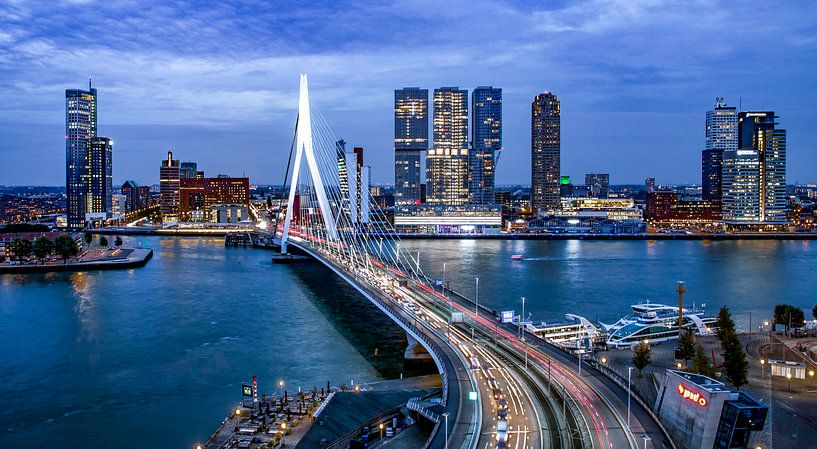
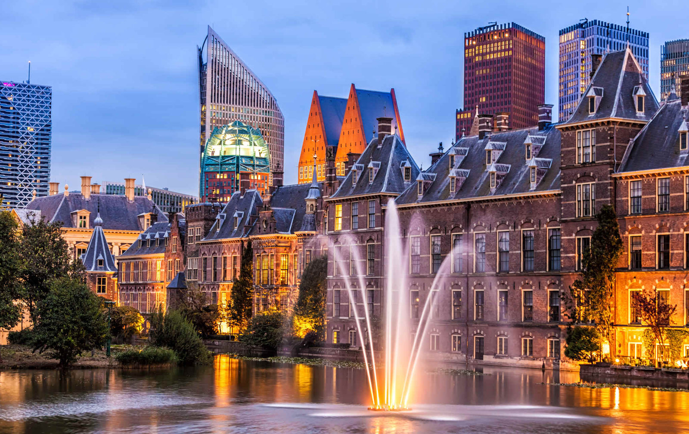
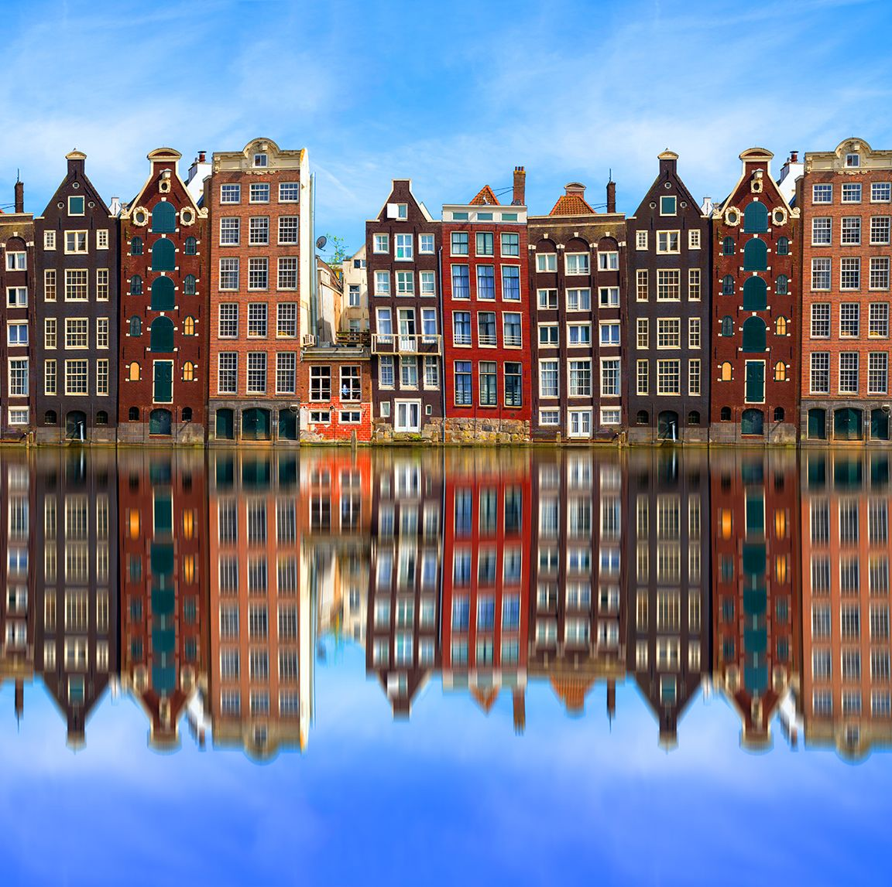

Rotterdam
Clasificada por Lonely Planet como uno de los «Top 10 mejores destinos del mundo», Rotterdam, la segunda ciudad más grande de Holanda.

La haya
Considerada como una de las ciudades más elegantes de Holanda.

Amsterdam
La ciudad por excelencia, perderse por sus canales, sobretodo cuando empieza la época más veraniega, momento en que las flores parecen estallar en los rincones y la ciudad se presenta ante nosotros realmente preciosa.
